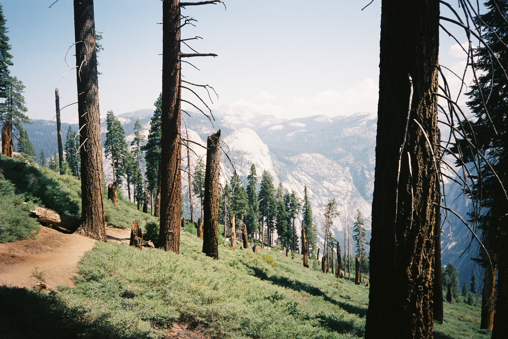

photos


education/physical
- Education:
- SVA
- July 2015
- Seminar in Interaction Design
- Specialization: prototyping, user-oriented research and testing
- New York Code & Design Academy
- Spring 2015
- Web Development 100
- Specialization: Front-end development
- University of Vermont
- 2008-2012
- Bachelor of Arts: Political Science, Environmental Studies
- Specialization: environmental policy and law, reading too much
- Experience:
- Joe Coffee 2013-Present
- Barista, Special Events Organizer
- Specialization: UX In Real Life (IRL), also known as customer service
- Ordering everything, Preparing Exemplary Espresso, Kindness, Patience
- University of Vermont Registrar 2008-2012
- Student Services Assistant
- Specialization: Typing, mailing, database entry and proofreading.
- Personal Study:
- Codeschool profile and progress
projects/virtual
- P'unk Ave Mockup
- Recreated another website from scratch using only HTML5 and CSS3. Original websites utilized Javascript and additional frameworks. Completed in January 2015. May differ from original significantly.
- Tic Tac Toe
- A simple javascript game, mildly responsive layout.
- This Website was built using SASS, HTML5 and a little bit of Javascript.